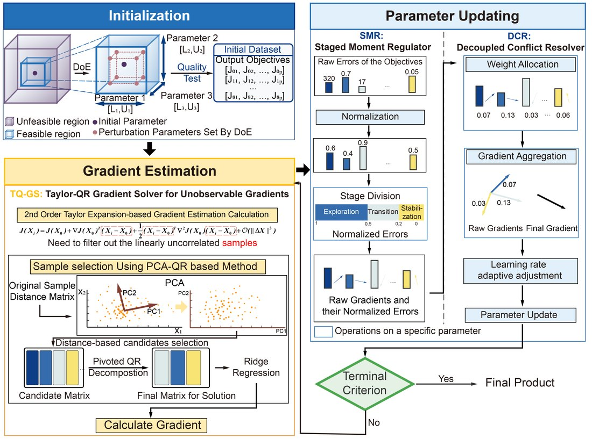
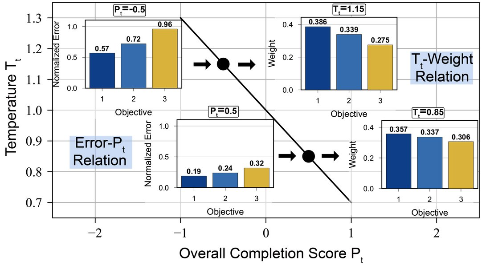
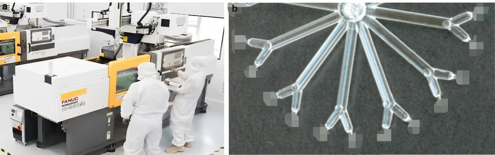

少样本多目标工艺参数优化框架 GraSEMFew-shot Multi-objective Process Optimization (GraSEM)
针对超精密制造（光学镜片等）中“参数-质量关系难建模、多目标冲突、收敛慢且不稳”的痛点，提出无模型多目标工艺优化框架 GraSEM：用 Taylor-QR 梯度求解器从病态历史数据中精确重构不可观测梯度，用分阶段动量调节器自适应调步长，用解耦冲突解决器动态分配多目标权重；仿真中 7–9 次迭代稳定收敛、扰动后 1–2 步恢复、稳态误差较贝叶斯优化降 90%+，并在超精密光学镜片注塑产线上较 ADAM 综合质量评分提升 33%+。For precision manufacturing (e.g., optical lenses) plagued by hard-to-model parameter–quality relations, conflicting objectives, and slow/unstable convergence, GraSEM is a model-free multi-objective framework: a Taylor-QR gradient solver reconstructs unobservable gradients from ill-conditioned historical data, a staged momentum regulator adapts the step size, and a decoupled conflict resolver dynamically weights objectives; in simulation it converges stably in 7–9 iterations, recovers in 1–2 steps after disturbances, lowers steady-state error 90%+ vs. Bayesian optimization, and improves overall quality score 33%+ over ADAM on a real ultra-precision lens-molding line.
背景Background
精密制造中最终质量由几十个强耦合参数决定：参数-质量映射难建立、多指标相互冲突、参数范围广且质量高度敏感（要求初期快收敛、末期稳收敛）。传统田口法、基于模型法与贝叶斯优化各有局限。Final quality depends on dozens of coupled parameters: the mapping is hard to model, objectives conflict, and quality is highly sensitive over a wide range (needing fast early and stable late convergence). Taguchi, model-based and Bayesian methods each fall short.
方法 / 我的工作Method / My Work
- GraSEM 框架：三个协同模块解决梯度重构、收敛调节、多目标冲突。GraSEM: three cooperating modules solve gradient reconstruction, convergence regulation and objective conflict.
- Taylor-QR 梯度求解器：二阶泰勒展开建线性方程；高维先 PCA 降维选近邻、带列主元 QR 分解筛样本、岭回归正则化，从病态共线历史数据重构不可观测物理梯度。Taylor-QR solver: second-order Taylor expansion → linear system; for high dimensions, PCA + nearest-neighbor selection, column-pivoted QR to pick samples, and ridge regression to reconstruct unobservable gradients from ill-conditioned data.
- 分阶段动量调节器：按误差阶段（高/中/低），用 IQR 剔异常做归一化，借鉴 ADAM 动态调一/二阶动量实现平稳收敛。Staged momentum regulator: by error stage (high/mid/low), IQR-based outlier removal and normalization, ADAM-style first/second-moment tuning for smooth convergence.
- 解耦冲突解决器：用梯度余弦相似度量化多目标冲突，凸组合求最短改进路径动态分配权重。Decoupled conflict resolver: cosine similarity quantifies conflict; a convex combination finds the shortest improving path and weights objectives.
结果Results
- 仿真 7–9 次迭代稳定收敛，扰动后 1–2 步恢复，稳态误差较贝叶斯优化降 90%+。Stable convergence in 7–9 iterations, 1–2-step recovery, 90%+ lower steady-state error vs. Bayesian.
- 在富强鑫透镜、舜宇成型机真实产线落地，较 ADAM 综合质量评分提升 33%+。Deployed on real lines (FCS lens, Sunny molding machine), 33%+ higher quality score than ADAM.
- 一作英文论文（IJAMT，返修中）+ 中文核心（学生排一）+ 国家发明专利（实质审查中）。First-author paper (IJAMT, in revision) + CSCD-core (first student author) + national patent (under examination).
图片Figures



本人角色：第一作者，独立完成方法设计、软件实现、仿真与实机实验、论文撰写；代码已开源（GitHub: JamaicaBoy/model-free-parameter-optimization）。My role: first author—method design, implementation, simulation and on-machine experiments, and writing; open-sourced (GitHub: JamaicaBoy/model-free-parameter-optimization).